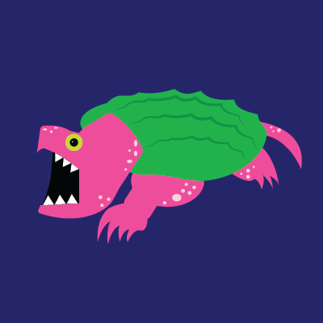
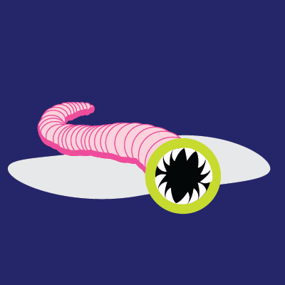
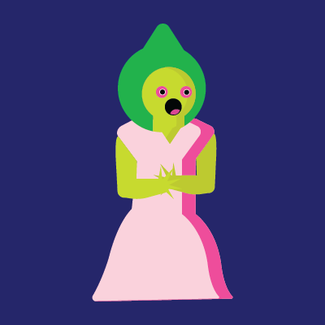
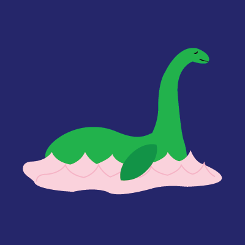
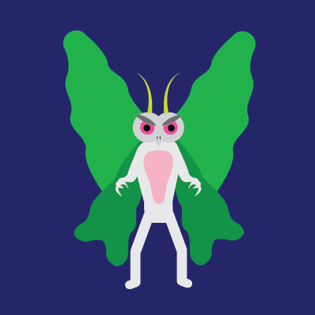
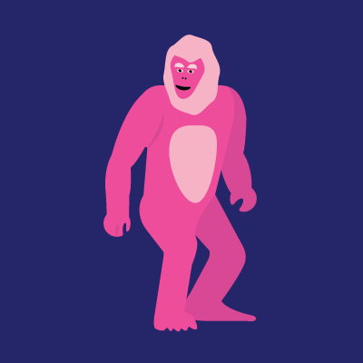
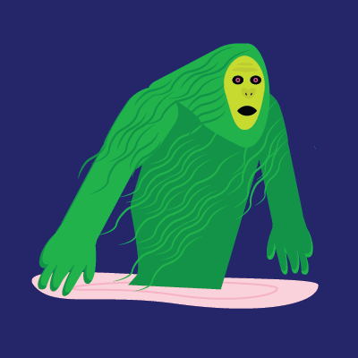
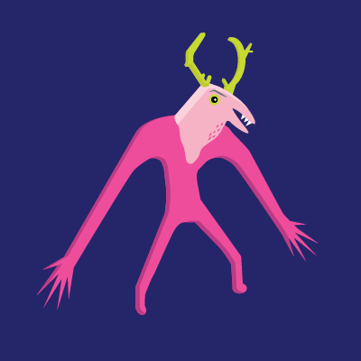

| Depiction | Name | Alias | Description | Location | First Reported |
|---|---|---|---|---|---|
|  | The Beast of Busco | Oscar | Alleged giant alligator snapping turtle. | Northern Indiana, United States | 1948 |
|  | The Mongolian Deathworm | Olgoi-khorkhoi, Sandworm | Dangerous, dark red worm-like animal. | Mongolia and Kazakhstan | 1932 |
|  | The Flatwoods Monster | Braxton County Monster, Green Monster | Tall figure with with hood-like shape around face and glowing eyes. | Flatwoods, West Virginia | 1952 |
| The Loveland Frogman | Loveland Lizard | Humanoid Frog roughly 4 feet tall. | Loveland, Ohio | 1972 | |
|  | The Loch Ness Monster | Nessie | Large marine creature with long neck, small head, a hump and four flippers. | Loch Ness Scotland | First written account 565 AD |
|  | Mothman | Winged Man, Bird Man, UFO-Bird | Slender, muscular man with large wings, 7 feet tall. Large humanoid bird with red eyes. | Point Pleasant, West Virginia | 1966 |
| The Fresno Nightcrawler | Fresno Alien, Ghost Pants | White humanoid with long legs and no discernable arms. | Fresno, California | 2007 | |
|  | The Florida Skunk Ape | Swamp Ape, Florida Bigfoot | Bipedal ape-like creature, with reddish brown hair and a foul odor. | Southeastern United States, most prominent in Florida | First written account, 1818 |
|  | The Honey Island Swamp Monster | Cajun Sasquatch | Bipedal, humanoid, approximately 7 feet tall, grey hair, yellow or red eyes and foul odor. | St. Tammany Parish, Louisiana | 1963 |
|  | Wendigo | Atchen, Chenoo | Giant creature with sunken or glowing eyes, sharp fangs and claws, may have horns or antlers, foul odor. | Colder climates, Northern United States and Canada | First known written account, 1636 |